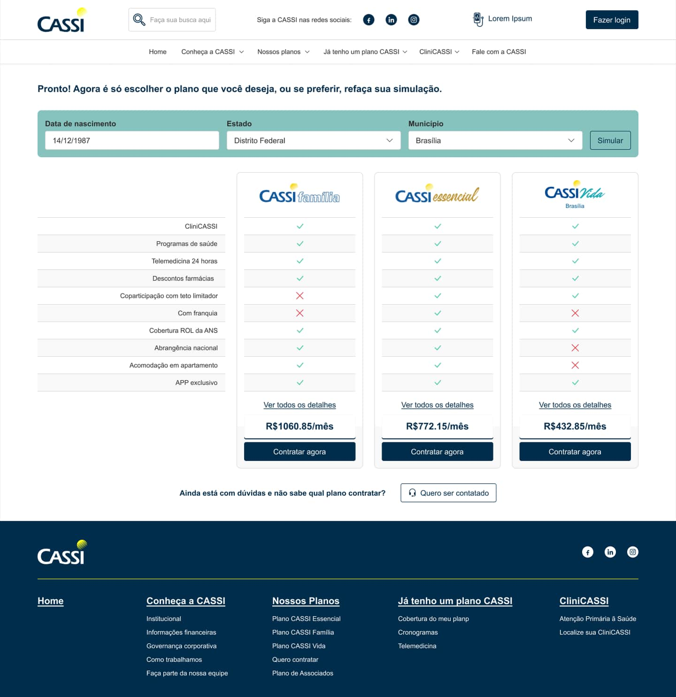
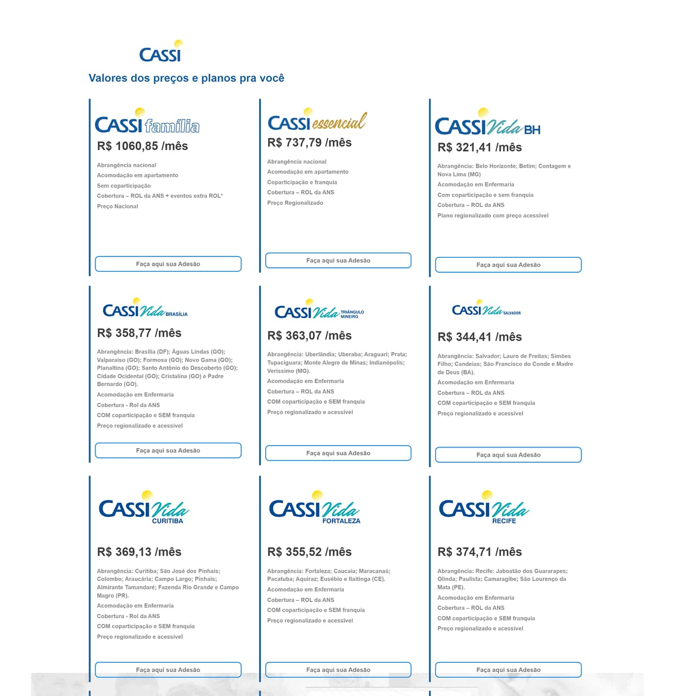
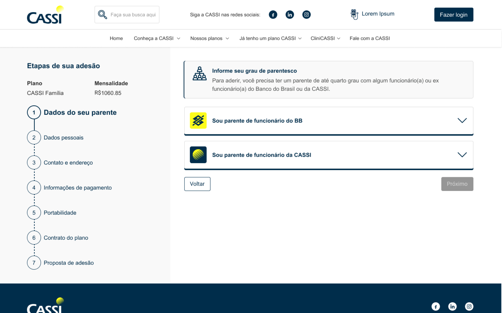
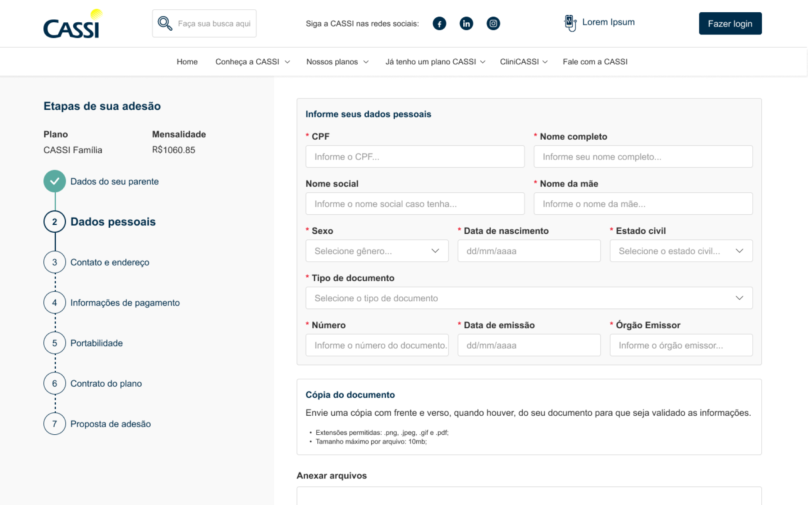
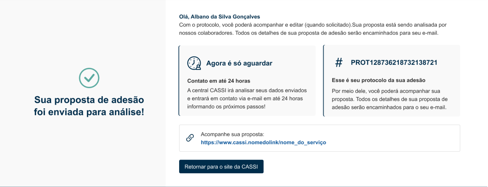

Enrollment Journey
Redesigning plan exploration, document submission, and status tracking. Proposal volume grew 171% from January 2023 to January 2024.
A fragmented journey, dependent on support.
The enrollment journey for relatives of Banco do Brasil associates was difficult to navigate. Barriers to exploring plans, fragmented document submission, and limited status visibility made it hard to progress independently:
- Mandatory pre-registration required an account before users could explore plans or understand which documents they would need.
- Documents were submitted across several steps with call center validation, adding handoffs and rework to the process.
- Without a visible proposal status, users had to contact the call center to find out where they stood.
From discovery to the redesigned journey.
I led discovery activities including journey mapping and interviews with users and internal teams. I defined final flows and reviewed business rules with IT, the call center, and business areas. I built the future journey as a high-fidelity prototype in Figma using variables to test multiple scenarios, and followed the full UX to UI cycle through handoff.
Organizing discovery.
The board brings together a CSD matrix, brainstorming areas, a user/customer journey, and an empathy map. It offers an overview of how discovery material was organized, without requiring each small note to be read.
The supplied “Desk Research” label does not establish the research sources or methods used. The board shows synthesis artifacts, not a verified record of individual findings or a link from specific notes to the decisions below. Material cut off at the source’s lower edge remains outside this view.

Helping users progress with less support.
Remove mandatory pre-registration
Users had to create an account before they could understand the available plans or required documents. We moved plan exploration ahead of registration so they could review their options before committing to the process.
Explore plans before creating an account.
From plan cards to aligned benefits.
The earlier screen presents plans as separate cards. The redesigned screen aligns plan benefits in a comparison table, with shared rows across the displayed plans.
These examples show a change in presentation, not equivalent products or prices. They do not demonstrate lower prices, fewer available plans, or whether an account or personal data is required. Exploring before registration is the journey decision described above.
Drag the divider or use the arrow keys to compare. Home shows After; End shows Before.


Reorganize steps around the user's mental model
The original flow followed the system's internal requirements. We reorganized it into a sequence users could follow: explore plans, simulate costs, choose a plan, enter personal details, submit documents, and track the proposal's status.
A clear sequence from plan exploration to status tracking.
Eligibility within the journey
The eligibility guidance sits beside a seven-step sequence, keeping the current stage and the remaining journey in view. The relationship categories are closed in this capture. This is one view of the journey, rather than a walkthrough of all seven steps.

Personal details and document preparation
The applicant's personal details are grouped with guidance on preparing a copy of their identification document. The sidebar marks personal details as the current stage. The upload area is partly outside this capture, so the image does not show the complete upload experience or a successful submission or validation.

Portability as a specific situation
For applicants bringing waiting periods already served under another health plan, this view introduces portability and groups its categories beside an explanation of how to request it. The categories remain closed; their detailed requirements are not visible here. This is a specific situation within the journey, not a sequence of portability screens every applicant must complete.
Structured status visibility throughout
Users contacted the call center to check their proposal's progress. We added structured status messages and notifications to explain the current stage and what comes next, with the aim of reducing the need to call for updates.
See the proposal's progress and next steps.
Submitted for analysis, with a reference for what comes next
The confirmation says the proposal was submitted for analysis. A protocol number gives the applicant a reference, alongside instructions to wait for contact about the next steps. This is not approval or completed enrollment.
The tracking address shown is a placeholder within the capture, rather than a live status consultation. The screen describes email contact within 24 hours; it does not verify email delivery or that this timing was met. It illustrates the submission moment within the broader status-visibility design above. Reducing calls for updates remains an unmeasured objective.

Proposal volume grew 171% year over year.
The redesigned journey launched in March 2023. Proposal volume rose from 408 in January 2023 to 1,105 in January 2024, a rounded increase of 171%. These figures count proposals, not completed enrollments, and do not isolate the redesign's contribution to that growth.
171%
more proposals: Jan 2023 vs Jan 2024
408 → 1,105
proposals Jan 2023 vs Jan 2024
Mar 2023
redesigned version launched
Have a project in mind?